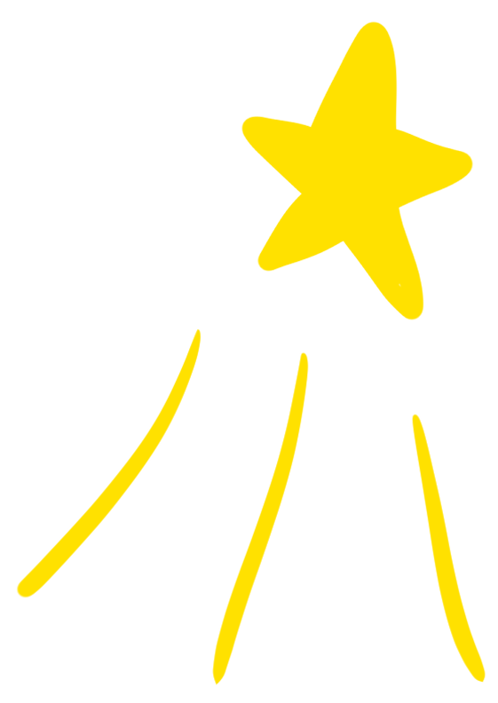
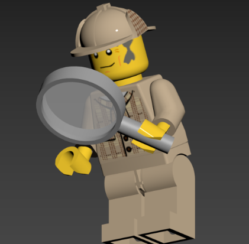
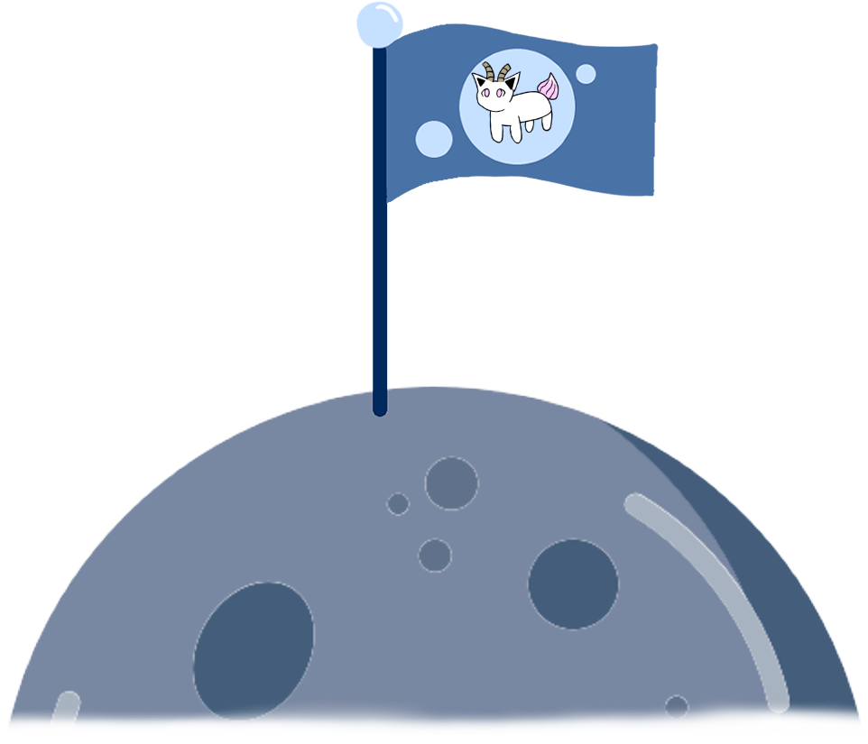

CONTEXTE

Un musée prestigieux fait un appel d'offres à des agences de VR, RA, jeux (dans lesquelles évoluent des
employés en programmation / développement lié à l’imagerie et des infographistes pour la VR, RA,
jeux...) pour créer un musée virtuel avec une mise en scène pour un jeu classique ou/et de la réalité
virtuelle. Le but est que l’agence gagne cet appel d’offre. Les étudiants jouent le rôle d’employés au
sein d’une agence de 3D pour le jeu.
Dans ce travail, la tâche à réaliser était de reprendre une modélisation d’un temple inspiré de celui du
Liban et de créer, par groupe de 6 personnes, un jeu vidéo avec une mise en scène en y ajoutant des
œuvres de notre choix de différents artistes donnés. Nous avions la liberté du moteur graphique à
utiliser. Ma tâche était de composer la musique du jeu, écrire sa mise en scène, modéliser une œuvre de
l’artiste Samsofi et d’animer une œuvre de l’artiste Keith Haring.
ÉTAPES

- Écriture d’une mise en scène simple pour le jeu
- Recherche de modèles gratuits pouvant m’aider pour l’œuvre de Samsofi
- Modélisation complète de l’œuvre
- Application correcte des textures à l’œuvre
- Animation de l’œuvre de Keith Haring
- Composition d’une musique pour l’ambiance pesante
- Implémentation des œuvres dans le jeu sur Unreal
PRINCIPE DU JEU
-

Grosse Pièce gardée par un capybara
-

"Bests Buddies" de Keith Haring, mais animé
-
Vue de haut du temple
Works of Friendship (Œuvres d’amitié) est un jeu développé sur Unreal Engine où l’on doit aider un mystérieux lion doré à retrouver son ami dans un temple remplis d’autres personnages étranges... Le jeu se présente comme une expérience dans un environnement lugubre et à l’atmosphère pesante et étrange où le joueur visite le temple et peut parler avec chacun des personnages (œuvres) à l’intérieur pour tenter de retrouver le véritable ami du lion doré pour finir le jeu.
WORKS OF FRIENDSHIP,
UNE EXPÉRENCE RÉELLE ET FICTIVE

Works of Friendship, c’est avant tout un travail d’équipe. On s’est réparti équitablement les tâches
selon les affinités de chacun. Je suis encore aujourd’hui fier d’avoir été responsable de la partie
scénaristique et musicale du jeu en plus d’avoir participé à la réalisation de certaines œuvres pour le
jeu.
Durant le projet, on a rencontré plusieurs difficultés, surtout vis-à-vis de Unreal Engine. Le moteur
avait du mal à fonctionner correctement sur plusieurs de nos ordinateurs, et ralentissait grandement la
partie développement du projet. En conséquence, nous avions décidé de baisser les ambitions du projet.
Au début, nous avions pensé à faire de l’araignée une réelle menace pour le joueur. Des zones rouges sur
le sol se seraient déplacées selon un pattern prédéfini, représentant la vision de l’araignée, et le
joueur aurait dû les éviter pour arriver au panthéon. Sinon, il aurait été pétrifié et réanimé juste
avant ce passage jusqu’à le réussir.
Pour ce qui est des points d’améliorations, l’ambition me vient alors en premier en tête. Il faudrait
que je propose des choses moins ambitieuses à l’avenir en premier, qui soient plus faciles à réaliser,
pour être ensuite améliorées en une plus grandes ambitions si le temps et les ressources le permettent.
Cela évitera de chambouler des projets encore plus gros que celui-ci.
Le résultat est satisfaisant grâce à l’ambiance et l’étrangeté de ces œuvres dans un tel temple. En y
jouant, on sentait qu’on avait créé un jeu vidéo qui s’appréciait comme une expérience plutôt qu’un jeu
: et c’était parfait ainsi. Pour moi, Works of Friendship aura autant été une expérience dans sa
réalisation qu’en y jouant.